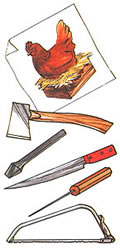
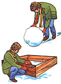
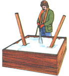
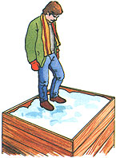
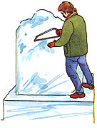
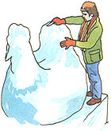
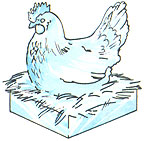

Snow Sculpture
By the Mother Earth News editors
January/February 1983
From the superb Snow Festivals of Sapporo, Japan to the delightful Winter Carnivals at Dartmouth College in New Hampshire, half a world away (see the accompanying photographs) . . . snow figures - carved, and glazed to perfection - delight and inspire millions of people each winter.
THE BASICS
As you'd imagine, it takes time to create one of these masterpieces, but the process isn't as difficult as you map think. The basic requirements and techniques of construction remain the same whether your design is 3 or 33 feet high.
First of all, you need a model or pattern to work from . . . an abundant supply of snow . . . temperatures at or below freezing . . . and a few shaping tools. You must then find (or build) a snow mound of suitable size from which to carve your figure.
STEP BY STEP
Of course, most of us have learned in the "roll up a big ball of the white stuff and have at it" school of snow sculpting . . . but to make a durable structure - if anything made of frozen water can be called durable - of any real size, you'll want to consider building a layered mound with supports buried inside.
This technique begins with the construction of a simple wooden frame into which snow is tightly packed. If the sculpture is to be large, or will feature legs or extended limbs, wooden posts should be anchored in the snow mass. The entire base is doused with water and allowed to freeze, overnight, in temperatures of 15° to 25°F.
After that, a smaller frame is placed on top of the platform, packed full with snow, doused, and frozen as before. In this manner a "step pyramid" is constructed to the height of the figure planned.
SHAPING UP
The rough contours of the design are then hacked or sawed out with a heavy knife, hatchet, or wide-toothed tree saw. (Even an electric chain saw can be used to good advantage here!) Care must be taken not to break off portions of snow that will be needed for the sculpture, of course . . . but if an accident should happen, repairs can be made with a quick-freezing mixture of snow and water.
Once the rough shape has been formed, the artist uses chisels, knives, picks, and other such tools to carve the details. A final spraying with water, followed by an overnight freeze, will smooth the surface and make it glisten.
SNOW TROUBLE
One final point: A large sculpture can become dangerous as it melts . . . either dropping pieces that could fall on passers-by, or providing an irresistible temptation to adventurous children who don't realize that their "mountain" is both slippery and unstable. If you've created such a design, perhaps you'll want to do as the Japanese do at the end of their Snow Festivals: Give thanks for having been part of a happy and beautiful experience, and then destroy the sculpture . . . thus forestalling hazards that might be posed by the melting artwork.
 Photos Courtesy of Dartmouth College Photograph Records From Dartmouths Winter Carnivals: An ""Old Man of the Snows"" (LEFT) dwarfs the two students in his bowl. A clown (CENTER) is ready to juggle snowballs in front of Baker Library. As its expression suggests, this magnificent dragon (RIGHT) is being attacked by an icy, unseen St. George |
 |
 |
|
 |
 |
 |
|
 |
 |
|